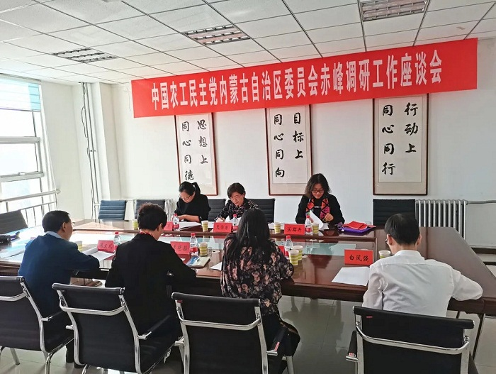
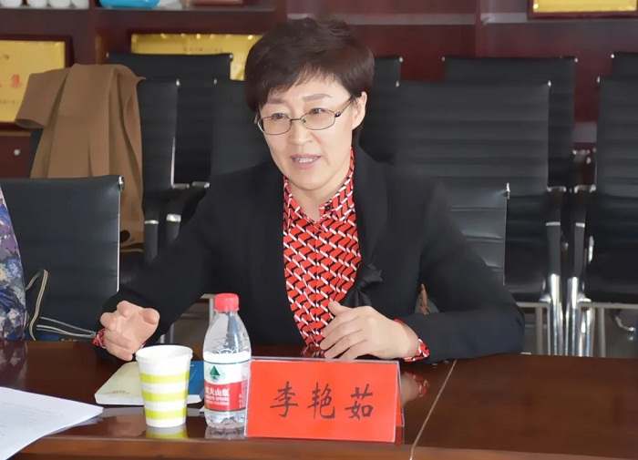
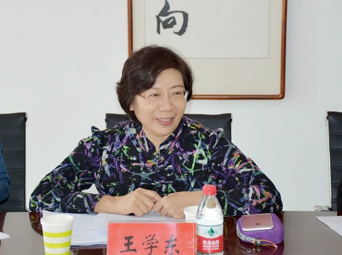
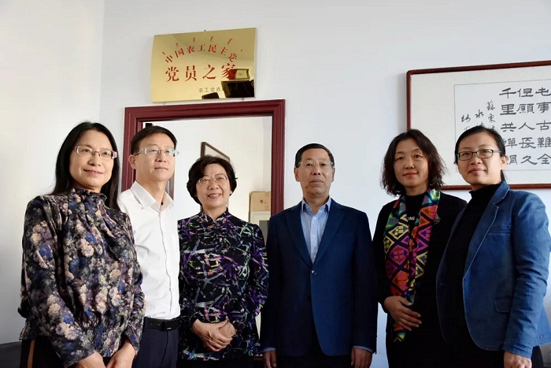

2020年11月12日至13日，农工党自治区委专职副主委王学东、组织部负责人孟昭卉等一行赴赤峰市，就农工党组织建设工作及推进旗县级疾病预防控制服务能力建设开展调研。农工党赤峰市委主委、赤峰市政府副市长李艳茹，农工党赤峰市委副主委隗春华、陈文武及秘书长白凤强等陪同调研。

李艳茹围绕班子建设、队伍建设、党员管理、基层组织建设等内容介绍了农工党赤峰市委组织建设工作开展情况，参会人员就所在支部组织工作情况进行汇报，大家还就推进旗县级疾病预防控制服务能力建设有关课题进行了座谈交流。

王学东对农工党赤峰市委各项工作给予充分肯定。她强调，组织建设是参政党自身建设的基础，为不断提升履职能力和水平、发挥参政党作用，农工党赤峰市委要全面加强自身建设，按照注重质量、保持特色、组织发展与后备干部队伍建设相结合的原则，有计划地稳步发展党员；要加强思想政治引领，积极开展形式多样的学习教育活动，增强思想认同，筑牢团结奋斗的共同思想政治基础；要切实增强组织凝聚力、号召力和战斗力，团结带领广大农工党员，发挥界别优势，围绕中心、服务大局，展现新担当、实现新作为，为推进赤峰市经济和社会事业发展献计出力。

调研组还了解了农工党赤峰市委口述党史工作开展情况，视察了农工党赤峰市委“农工党党员之家”。